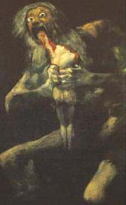
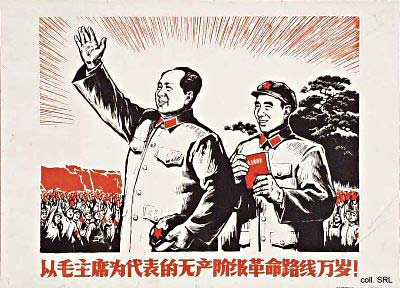
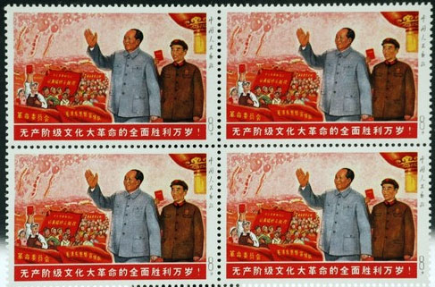
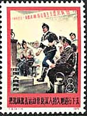
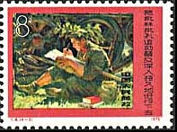
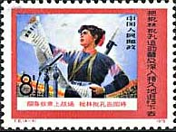
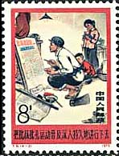
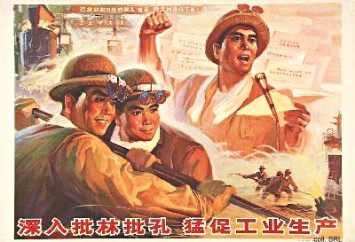
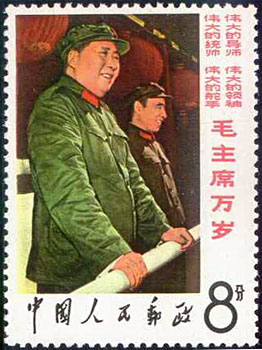
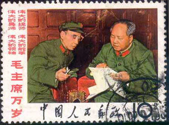

Study Chairman Mao's writings, follow his teachings
and act according to his instructions. Lin Biao
Lin Biao (1907-1971) was considered one of the strategic men of genius of the Chinese People's Liberation Army. Lin was trained at Whampoa Academy, and during the Northern Expedition he rose to company commander in the Kuomintang army. After the Kuomintang-Communist split in 1927, he became one of Zhu De’s leading military aides. His skill as a tactician earned him the command of a Red Army corps, and after the long march, he headed the Red Academy at Yan’an. In 1947–48 he commanded the Communist military offensive in the northeast against Chiang Kai-shek.
|
 |
 |
During an engagement with Japanese troops, he was wounded, and he received medical treatment in Moscow during the years 1938-1942. Lin was appointed defense minister of the People’s Republic in 1959. In 1966 he displaced Liu Shaoqi as the second-ranking member of the Chinese Communist party, a position that made him Mao Zedong’s heir. He was a strong supporter of the Cultural Revolution (1966–76),

Lin Biao ingratiated himself with Mao by fanning the personality cult around the Great Helmsman. He made the Army a great school of Mao Zedong Thought, and had Mao's quotations compiled and published in the famous Little Red Book, for which he wrote an inscription and a fawning introduction. Moreover, he supported Mao's spouse Jiang Qing and her attempts to play a significant role in Chinese politics with her supporters, united in the so-called Gang of Four.
|
 |
 |
 |
 |
After having been anointed Mao's "close comrade in arms" and designated successor in 1969, Mao seemed to turn against Lin and his supporters. In January 1974, the struggle was made into a large-scale, national movement. The media continued to publish articles that ostensibly were critiques of Lin Biao and Confucius. In fact, they were innuendo attacks on Zhou Enlai and other rehabilitated veteran cadres. Although the movement had been reviewed by Mao himself, the Central Committee regularly had to send out circulars to clarify matters. Lin's 'betrayal' was severely criticized in the Gang-of-Four-inspired Campaign to Criticize Lin Biao and Confucius. Please note the amalgamate made for propaganda reasons between the thinking of an ancient philosopher and that of a convinced communist.

In an attempt to take over power from Mao, Lin and his faction allegedly drew up a plan for a coup, or armed uprising, the Wu qi yi (571, a pun on 'armed uprising') plan. Before it could be implemented, Mao, Zhou Enlai and others found out. Fleeing the country with his family and staunch supporters, Lin's plane crashed over the former Mongolian People's Republic in 1971. It would take another year before this information was made known to the Chinese population. We will probably never know why crashed that plane...
 |
 |
The set "Campaign to encourage criticism of Lin Biao and Confucius", shown above, was issued by the Chinese Poostal Administration on August 20, 1975. Point on the stamps with the mouse for more information. Text and both posters courtesy of Stefan Landsberger's "Chinese Propaganda Posters" site.
"Saturn Devouring his Son" is the work of the Spanish painter Francisco Goya. It was painted between 1819 - 1823.
Created:
08/20/03. Revised: 1/10/2024. |